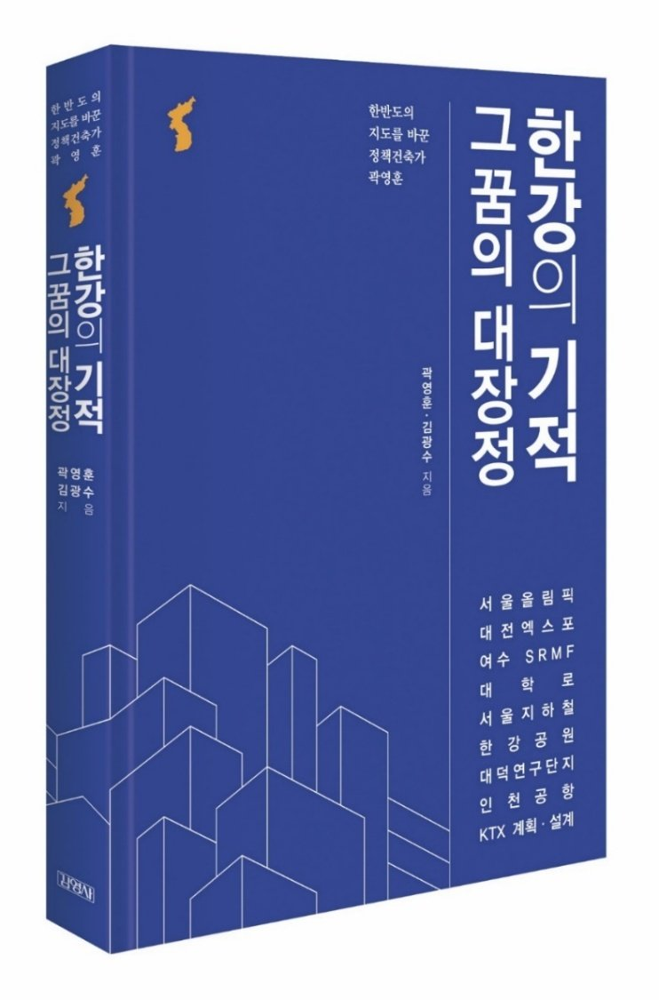

02 / THE NATION
A bigger picture for Korea.
Parks, transport networks, cities and international events: a long view of how places can help a nation flourish.
Explore the stories ↓
THE IDEAS BEHIND THE WORK
Seeing the whole picture.
Connected frameworks for national development, stewardship and peace.
Tetrahedron & 20 lenses
The reference combines four design values — innateness, harmony, sustainability and goodness — with five environments to form 20 lenses for design and policy.
S.E.R.V.E.6
Economics, Environment, Education, Engineering, Energy and Ethics: six connected dimensions of national vitality.
M.V.I.P.
Three iterations in the reference: Vigor and Green Axes (1971), a long-range plan for the year 2000 (1979), and the Techno-Cultra Network (1981).
T.R.U.S.T. & U.N.I.T.E.
T.R.U.S.T. connects Thalassa, Rural, Urban, Smart and Tie. U.N.I.T.E. stands for Ubiquitous Nature Intelligence Transportation Envisioning. Both consider places and infrastructure as connected systems.
N.E.A.R.A. & T.H.I.N.K.
The North East Asia Region Accord and Toward Humanity International Network of Koreans extend the vision into regional cooperation, peace and networks of people.
Places, plans & possibilities
Explore the photographs, ideas and work. Open a story to read more and see its source.
Search in English or Korean.
No stories found.
Try another word or clear your search.
CONTINUE THE JOURNEY
Behind every story, a deeper conversation.
Miracle on the Han River: A Long Journey of Dreams explores Kwaak’s life and work through conversations with philosopher Kim Kwangsoo.
Based on the supplied biography, WCO presentation and vision outline. Historical roles and figures reflect those materials. Proposals are distinguished from completed projects.
